超級好吃的櫻桃鴨中式餐廳！

《蘭城晶英酒店-紅樓中餐廳》
🌟宜蘭櫻桃鴨🌟
📍宜蘭縣宜蘭市民權路二段36號6樓
這隻鴨已經在小編的口袋名單很久，這次終於吃到惹🔥它位於晶英酒店的大樓，地下室有停車場，所以蠻方便的！但一定要記得提早預約，因為它的鴨真的很搶手😋師傅有一個堅持，「烤鴨出爐後必需在15分鐘以內上桌，餅皮務必在蒸熟5分鐘內出手」，所以大家要記得不能遲到，不然煮熟的鴨子就飛走惹🙈 那它有分4人、6人、8人、10人特餐，我們這次是8個人吃8人特餐，共兩隻鴨，非常非常的飽💪甚至打包回民宿當隔天的早餐😎不過我們在吃烤鴨前，吃了蔥油餅，又吃了潤餅冰淇淋🤣🤣🤣但我覺得就算沒吃這些東西，應該也能吃飽啦😃 8人特餐的部分，是櫻桃霸王鴨五吃，鴨的各個部位，各種料理方式都吃惹😙但因為小編對鴨不甚熟悉，沒辦法一一介紹，只能跟大家分享幾個我最驚豔的部分！
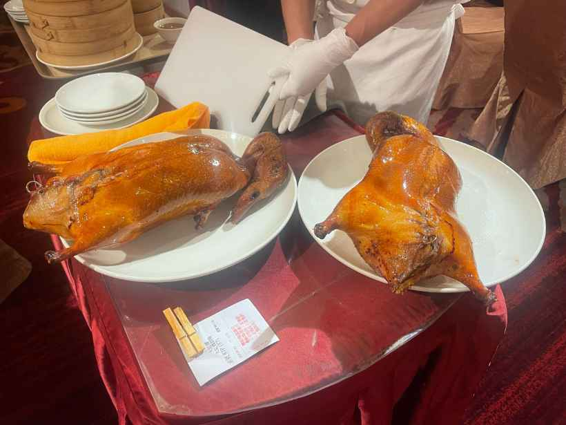
櫻桃鴨握壽司：那個櫻桃鴨皮的油光，從外表看上去，就超級可口，熱熱的鴨，配上熱熱的飯，一口塞入嘴巴，在咬下的同時，伴隨咔呲一聲的是櫻桃鴨的油香，超級好吃啦😇
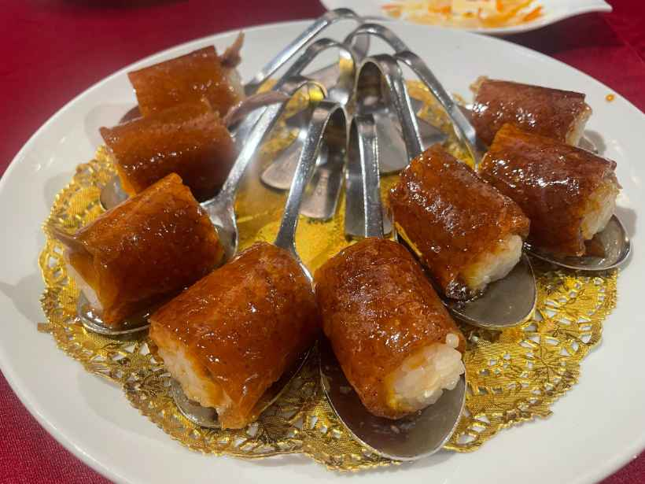
片皮鴨捲三星蔥餅：它的鴨好吃，但三星蔥也是巾幗不讓鬚眉！宜蘭不愧是三星蔥的產地😭
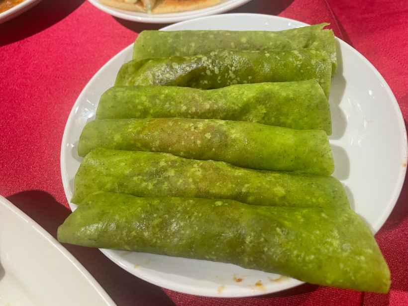
慢火白菜煲鴨湯：其實吃到這道的時候，小編已經飽到快吐出來惹，但還是硬生生的喝惹兩碗😆因為太好喝惹！！！很濃郁，也很香醇～打包隔天喝，也不失美味！！！
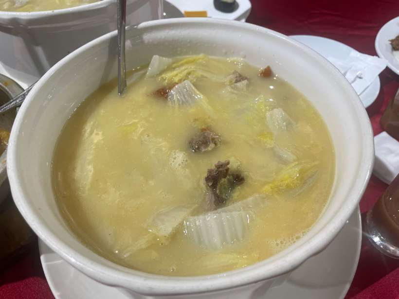
芋香西米露：有喝的人都說讚，不管你愛不愛芋頭，你都一定會愛上它的西米露🥹
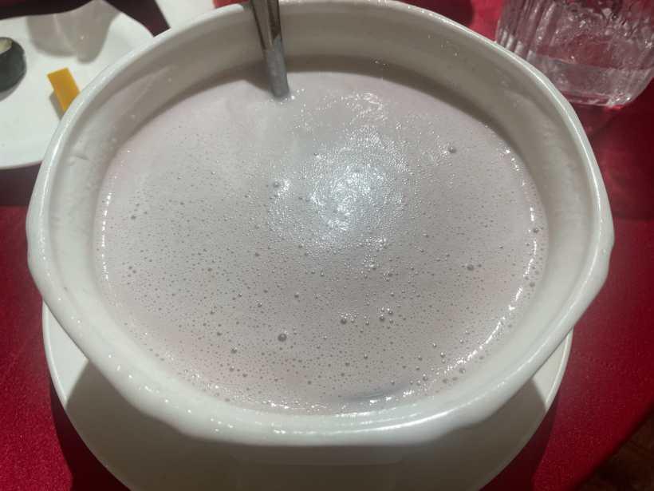
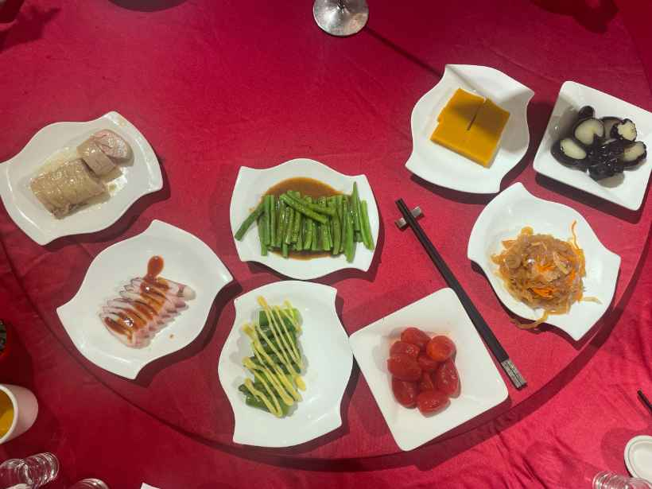
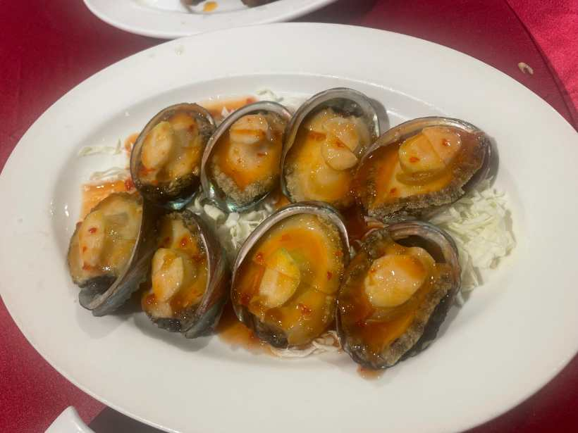
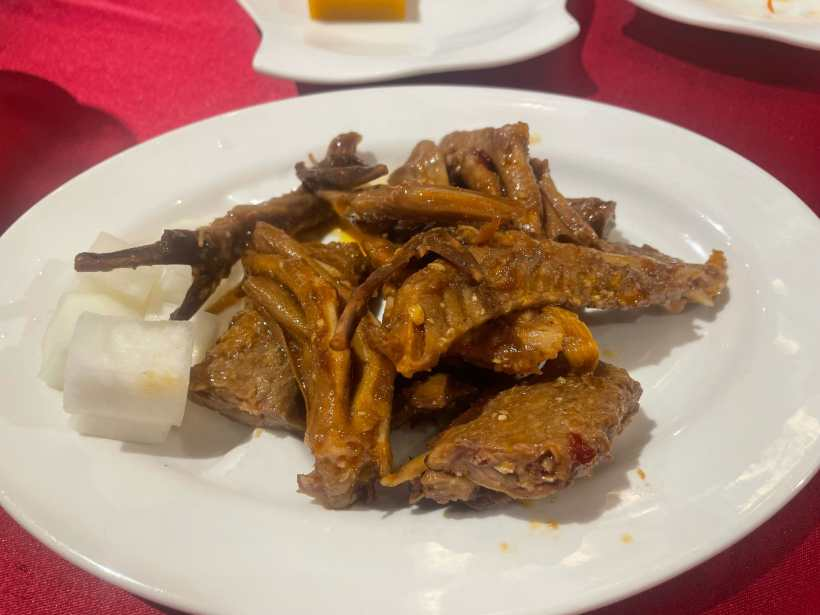
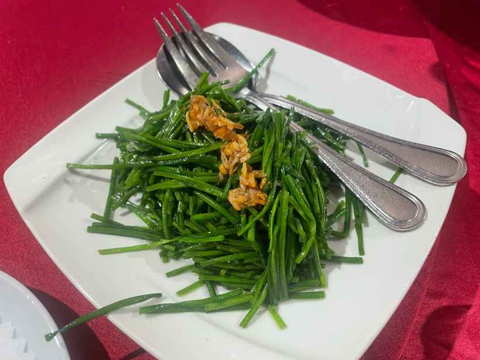
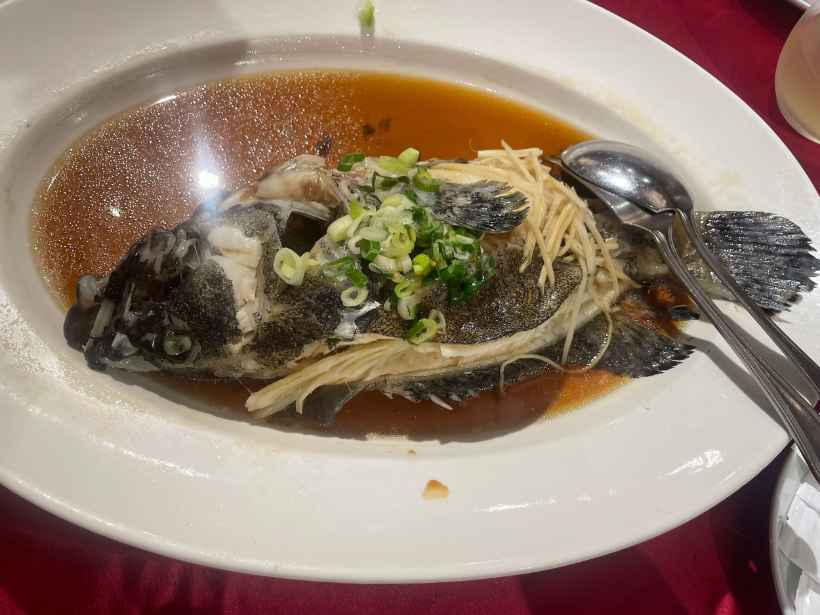
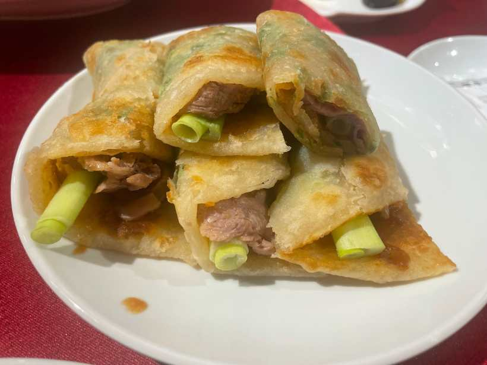
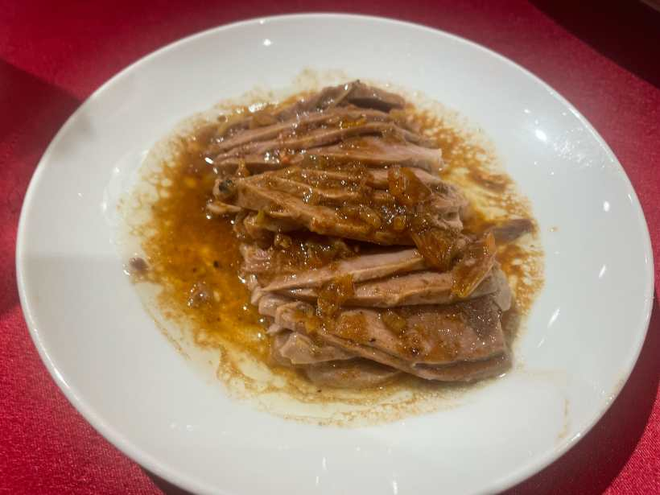
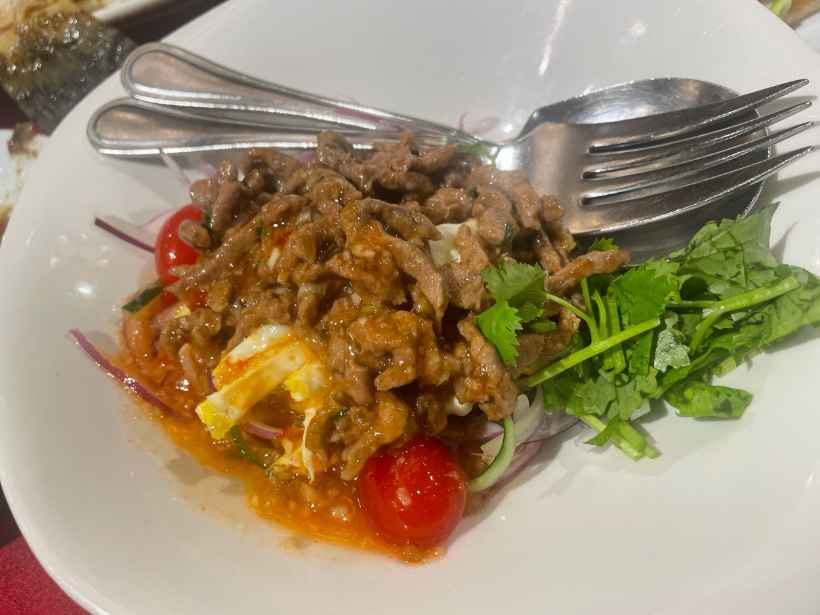
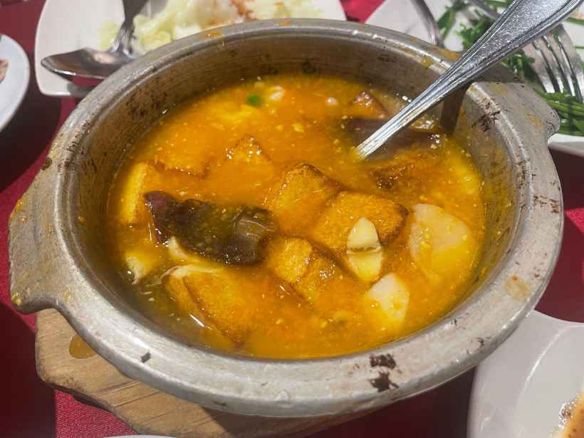
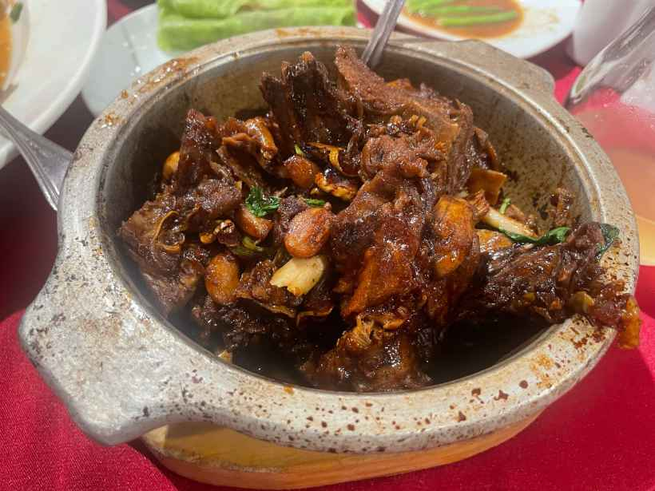
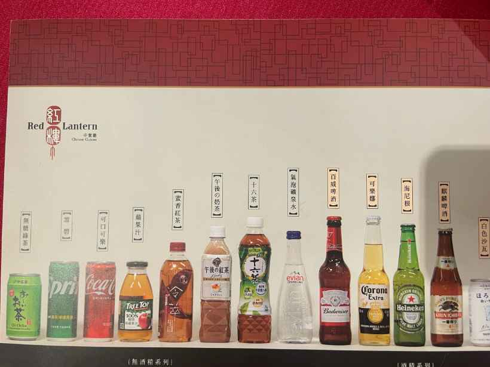
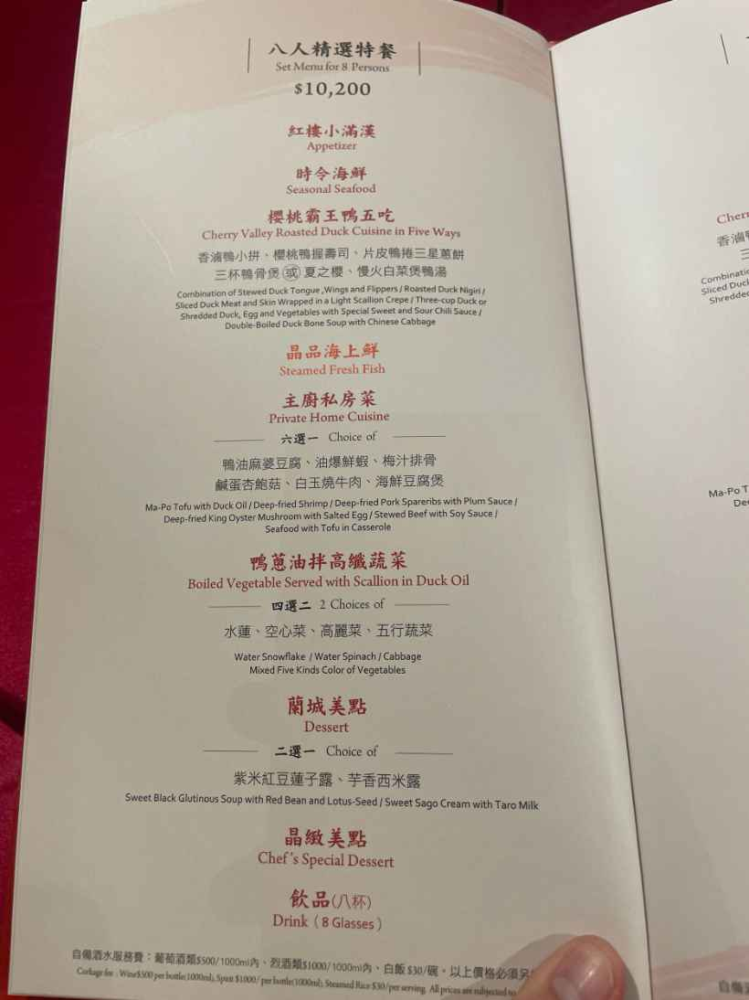
小編為惹吃櫻桃鴨，特別和朋朋們跑惹一趟宜蘭，雖然很荒謬，但也留下惹十分難忘的回憶🥰建議大家如果想去吃，可以多人前往，不然會撐破肚皮😅

認識小編